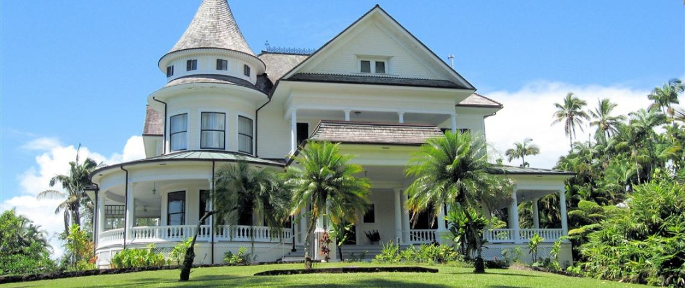

Bali has been my second home for almost 20 years now and still, every day, Bali surprises me. Still every day i learn and still every day i feel blessed by one or more moments.
Bali allowed me not only to create a pleasant home for my family. I met a wonderful Indonesian man and our two daughters were born and are raised in Bali. I have been lucky to establish my company in Bali which has given me much challenge and joy. Bali has blessed me in so many ways.

So now it is my turn to give and reach out to the less lucky ones on Bali. As a strong believer of “giving back” to this island of the gods, Balion supports numerous charities which help Bali - its people, the environment and nature.
Balion donates an amount of our income from every booking we get, whether the booking comes from a friend, an agent or a partner and of course includes YOUR booking.
These Charities Include:
SOLEMEN
A yayasan that does wonderful work to make the lives of many poor, disabled and less privileged better. We donate and make it possible for them to help the poor.
ORHANAGE
We donate to multiple orphanages in west, East and North which are less frequented by tourists wanting to donate. They are always in need for almost everything including food, sheets and other essential basics.
A local elementary school in TABANAN region in a typical small mountain village at the slopes of the Batu Karu . We support them in many ways and at an ongoing basis. From books to renovation of the roof. From water sanitation to English lessons.
BYE BYE PLASTIC BAGS
A social initiative, driven by children, to make the people say No to the use of plastic bags. They have become a famous movement on the island. A true inspiration to many.
We thank all our guests for their generosity and making it possible for us to continue our donation to charity.